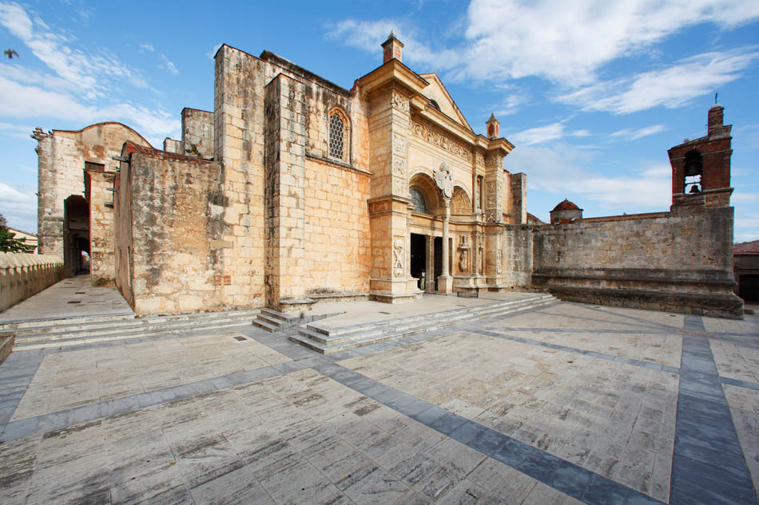

Patrimonio de la Humanidad UNESCO
Donde nació el Nuevo Mundo
Recorre adoquines centenarios, arquitectura colonial vibrante, cafés al aire libre y el alma cultural de Santo Domingo.
Recorre adoquines centenarios, arquitectura colonial vibrante, cafés al aire libre y el alma cultural de Santo Domingo.
1498
Año de Fundación
1ª
Catedral de América
1990
Declarada UNESCO
+500
Años de Historia
La Zona Colonial es el núcleo urbano más antiguo de Santo Domingo y el primer asentamiento europeo en las Américas. Caminar por sus calles trazadas en cuadrícula es adentrarse en la historia viva: aquí se construyeron la primera catedral, el primer hospital, la primera universidad y la primera aduana del continente.
Hoy en día, sus fachadas de tonos terracota y amarillo pastel albergan una vibrante mezcla de galerías de arte, bares de jazz, restaurantes de alta cocina y plazas llenas de música.

Los hitos arquitectónicos e históricos que no puedes dejar dess visitar durante tu estadía.

Siglo XVIConstruida con piedra caliza dorada, es la catedral más antigua de las Américas. Destaca por su arquitectura gótica y renacentista.
 Plaza España
Plaza España
Palacio gótico-renacentista que fue residencia de Diego Colón, hijo de Cristóbal Colón. Hoy alberga un museo de época impresionante.
 Militar
Militar
La estructura militar europea más antigua de las Américas, diseñada para vigilar y defender la entrada de la ciudad frente al río Ozama.
Más allá de los museos, la Zona Colonial se vive a través de sus sabores, música y atmósfera relajada.
Disfruta un auténtico café dominicano mientras contemplas el ir y venir de la peatonal más famosa.
Cena al aire libre frente al Alcázar iluminado con opciones gastronómicas locales e internacionales.
Música de son, salsa y merengue en vivo gratis en las ruinas del Monasterio de San Francisco.
Visita los museos interactivos dedicados al chocolate artesanal y la historia del ron dominicano.
Cada callejón tiene una historia y un color único que ofrecer.